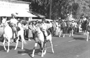
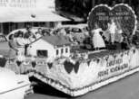
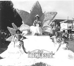

The Annual Caruthers District Fair had its beginning in the year 1923, with a two-day affair held on October 11 and 12. It was begun with a little hesitation and trepidation and as plans matured and work and expenses mounted some of the most dependable workers became doubtful that it could be a success. However, when the money was in and all bills paid there was a nest egg of $165 to begin plans for the next year. This was a real community project with everyone pitching in and doing his share. Since Caruthers was the first small community in the Valley to attempt such a project, Caruthers became an inspiration to other communities in the Central Valley. The program of this first Caruthers Fair included a football game between Caruthers and Fresno State College in which Caruthers was defeated 41 - 0. In 1925 the Caruthers District Fair Association was formed. This was a non profit organization "to promote and encourage" agriculture and other related industries. The fair was discontinued during World War II for obvious reasons. The fairgrounds were used as an emergency labor camp. After the war has ended, the community again began to feel the need for a project such as the Caruthers District Fair which had been held in the past. In the fall of 1945 the board again met and made plans for a fair to be held in November of that year, but conditions were not favorable and the tremendous amount of work connected with it would not permit it to be held on such short notice. 
In 1946 the Young Farmers, a group of young men made up largely of veterans recently returned from World War II, under the direction of John R. Adams, asked for the privilege of putting on the fair. this was a tremendous undertaking since there had been no fair during the war years and the grounds and buildings were in very poor condition and there was no money in the treasury. Perhaps because of their youthful energy and daring they did not allow these obstacles to stand in the way, and proceeded with the help of others in the community to clean the grounds and whitewash and repair the buildings to the best of their ability. At this time, Mr. Herluf Fries, who was a member of both the Young Farmers and the fair board, came up with the idea of giving away a car as the grand prize. This was almost too ambitious for most of the group to accept, for there was no money to pay for a car and they could not be sure the fair would bring that amount of money in. Nevertheless, Mr. Fries was given permission to see what could be done. New cars were still very scarce since the War and neither of the local dealers were able to furnish one. Mr. Fries finally located one he could get from an out-of-town dealer and paid for it himself. At the conclusion of the fair it was declared an unqualified success. All bills were paid including repaying Mr. Fries and there was money in the treasury to assure the next year's fair. To this day there has been no outside help of state aid, and all labor has been volunteered by the civic minded citizens of this area. 
Scenes from the Parade In August 1950, with little over a month until fair time, the 11 food booths were destroyed by fire. with more than 150 people we were able to complete the job of rebuilding at a minimum of time and expense. The only hired labor being a carpenter to oversee the job. This is considered California's largest free gate fair and is primarily funded by a queen contest. One of our featured attractions is our food booths, served by local churches and organizations. Other attractions include Entertainment at the Stage like the Sons of the San Joaquin and Elvis, Commercial Exhibits including Farm Equipment, Large Junior Livestock Show, Home Arts Exhibits, Horticulture and Floriculture Exhibits, Carnival Rides and a Parade on Saturday. In recent years a 9000 sq. ft. community building has been built. The building is used for weddings and other social events nearly every weekend, a permanent stage at the front of the fair grounds for queen coronation and entertainment and a new permanent steel frame roof over the Junior Livestock Show area. Almost unbelievable, but once again, in 1997 the roof was torn off the food booths by what appeared to be a tornado, even though the weather department denies such an event. At-any-rate, this tornado or extreme high winds during a storm destroyed the roof of the booths. The following year the Fair Board agreed upon having a Metal Building built over the top of the Food Booths. In 2002 a new livestock show ring metal bulding was completed. In 2010 the extremely old livestock barns were demolised and a new metal frame building was constructed. 